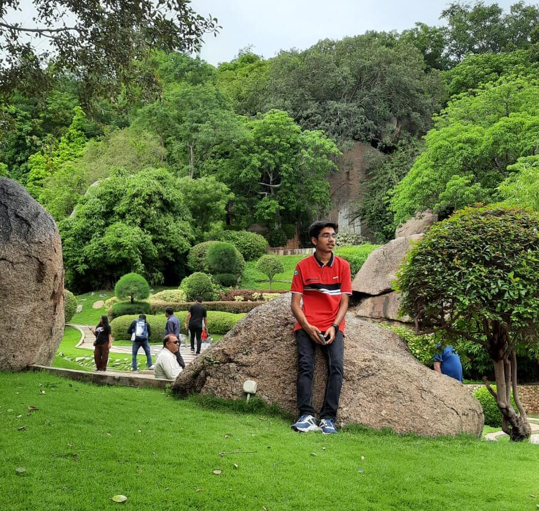

Hello! It's me Dev
Passionate about learning
ABOUT ME
I am Dev Kanani, an 18-year-old currently immersed in the pursuit of knowledge through my BTech in Computer Science and Engineering at the International Institute of Information Technology Hyderabad. My hometown, the tranquil city of Jamnagar in the vibrant state of Gujarat, holds a special place in my heart. Embarking on this educational journey has been an exhilarating experience, and I find great joy in delving into the world of technology. The peaceful ambiance of Jamnagar further enriches my journey, creating a perfect environment for focused learning and personal growth.
HYPERLINK
I am Dev Kanani, an 18-year-old currently immersed in the pursuit of knowledge through my BTech in Computer Science and Engineering at the International Institute of Information Technology Hyderabad. My hometown, the tranquil city of Jamnagar in the vibrant state of Gujarat, holds a special place in my heart. Embarking on this educational journey has been an exhilarating experience, and I find great joy in delving into the world of technology. The peaceful ambiance of Jamnagar further enriches my journey, creating a perfect environment for focused learning and personal growth.
HYPERLINK
EDUCATION
My educational journey unfolded from the early years of LKG to the significant milestone of completing the 10th standard at Shree Satya Sai Vidyalaya (SSSV), my hometown school. Fondly referred to as "SSSVians," the students formed a close-knit community, and the learning experience was nothing short of extraordinary.
SSSV embodied an environment where the emphasis was solely on learning, fostering a space of minimal workload and maximal focus. Nestled in the heart of Saurashtra, Gujarat, it proudly stood as the largest school in the region, boasting a serene and invigorating atmosphere. The top-tier administration added to the overall excellence of the institution.
Transitioning into the crucial phase of 11th and 12th for JEE preparation led me to "MODI SCHOOLS." Ready to embrace the challenges ahead, my initial aspiration was to secure entry into a prestigious college in Gujarat. However, fueled by determination and hard work, I surpassed my own expectations, reaching heights beyond my initial ambitions.
The journey from SSSV to MODI SCHOOLS marked a transformative period of growth, where each experience played a vital role in shaping my academic trajectory. The pursuit of excellence and the resilience cultivated during this transition laid the foundation for my future endeavors.
My educational journey unfolded from the early years of LKG to the significant milestone of completing the 10th standard at Shree Satya Sai Vidyalaya (SSSV), my hometown school. Fondly referred to as "SSSVians," the students formed a close-knit community, and the learning experience was nothing short of extraordinary.
SSSV embodied an environment where the emphasis was solely on learning, fostering a space of minimal workload and maximal focus. Nestled in the heart of Saurashtra, Gujarat, it proudly stood as the largest school in the region, boasting a serene and invigorating atmosphere. The top-tier administration added to the overall excellence of the institution.
Transitioning into the crucial phase of 11th and 12th for JEE preparation led me to "MODI SCHOOLS." Ready to embrace the challenges ahead, my initial aspiration was to secure entry into a prestigious college in Gujarat. However, fueled by determination and hard work, I surpassed my own expectations, reaching heights beyond my initial ambitions.
The journey from SSSV to MODI SCHOOLS marked a transformative period of growth, where each experience played a vital role in shaping my academic trajectory. The pursuit of excellence and the resilience cultivated during this transition laid the foundation for my future endeavors.
SKILLS
Sports and creative pursuits have been an integral part of my life, contributing to a well-rounded and vibrant personality. My love for sports encompasses a spectrum, from the fast-paced Badminton and Cricket to the exhilarating dynamics of Frisbee. Additionally, I have honed my skills in Lawn Tennis, Swimming, and Skating, finding joy and accomplishment in the diverse challenges each sport presents.
Beyond the realm of sports, I delved into the world of music, dedicating two years to mastering the harmonium, piano, and Casio. The melodious notes continue to resonate with me, offering a therapeutic escape and a constant source of delight.
During my school years up to the 10th grade, I actively participated in a variety of extracurricular activities, including plays, annual cultural shows, Navratri celebrations, and dance performances. These experiences not only enriched my school life but also instilled a sense of camaraderie and self-expression.
As I progressed, my interests in these activities underwent a subtle transformation. While I may not engage in them as frequently, there are moments when the allure of plays, cultural events, and dance shows beckons, prompting me to indulge in them momentarily. These pursuits, both athletic and artistic, continue to shape my journey, adding layers to the tapestry of my interests and experiences.
My interests extend beyond the realm of sports and music; I find immense joy in the creative realms of drawing, crafting, and origami. Expressing myself through art has been a fulfilling journey, allowing me to explore different facets of creativity and unlock new dimensions of self-expression.
In addition to traditional artistic pursuits, I have a penchant for engaging in diverse creative projects. From hands-on DIY endeavors to exploring the intricacies of electronic and hydraulic projects, my curiosity knows no bounds. This passion has not only been a source of personal satisfaction but has also garnered recognition, as evidenced by winning the first prize in my city for these innovative ventures.
A unique aspect of my interests involves star gazing through telescopes. The cosmos has always fascinated me, and observing celestial wonders through the lens of a telescope provides a captivating and humbling experience. It's a pursuit that fuels my curiosity about the vastness of the universe and offers moments of quiet contemplation under the night sky.
Together, these multifaceted interests contribute to a dynamic and ever-evolving journey, where each creative endeavor adds a layer to the tapestry of my experiences.
Sports and creative pursuits have been an integral part of my life, contributing to a well-rounded and vibrant personality. My love for sports encompasses a spectrum, from the fast-paced Badminton and Cricket to the exhilarating dynamics of Frisbee. Additionally, I have honed my skills in Lawn Tennis, Swimming, and Skating, finding joy and accomplishment in the diverse challenges each sport presents.
Beyond the realm of sports, I delved into the world of music, dedicating two years to mastering the harmonium, piano, and Casio. The melodious notes continue to resonate with me, offering a therapeutic escape and a constant source of delight.
During my school years up to the 10th grade, I actively participated in a variety of extracurricular activities, including plays, annual cultural shows, Navratri celebrations, and dance performances. These experiences not only enriched my school life but also instilled a sense of camaraderie and self-expression.
As I progressed, my interests in these activities underwent a subtle transformation. While I may not engage in them as frequently, there are moments when the allure of plays, cultural events, and dance shows beckons, prompting me to indulge in them momentarily. These pursuits, both athletic and artistic, continue to shape my journey, adding layers to the tapestry of my interests and experiences.
My interests extend beyond the realm of sports and music; I find immense joy in the creative realms of drawing, crafting, and origami. Expressing myself through art has been a fulfilling journey, allowing me to explore different facets of creativity and unlock new dimensions of self-expression.
In addition to traditional artistic pursuits, I have a penchant for engaging in diverse creative projects. From hands-on DIY endeavors to exploring the intricacies of electronic and hydraulic projects, my curiosity knows no bounds. This passion has not only been a source of personal satisfaction but has also garnered recognition, as evidenced by winning the first prize in my city for these innovative ventures.
A unique aspect of my interests involves star gazing through telescopes. The cosmos has always fascinated me, and observing celestial wonders through the lens of a telescope provides a captivating and humbling experience. It's a pursuit that fuels my curiosity about the vastness of the universe and offers moments of quiet contemplation under the night sky.
Together, these multifaceted interests contribute to a dynamic and ever-evolving journey, where each creative endeavor adds a layer to the tapestry of my experiences.
ACHIEVEMENTS
My academic journey has been marked by notable achievements, particularly in competitive examinations. Through dedicated efforts in JEE Mains, I secured an impressive rank of 588, while in JEE Advanced, I achieved an All India Rank of 1806. These accomplishments stand as a testament to my commitment to academic excellence.
During my formative years, I actively participated in various Olympiads organized by esteemed foundations such as SOF (Science Olympiad Foundation) and SZF (Silver Zone Foundation). The fruits of my intellectual pursuits manifested in the form of numerous city and state zonal level medals and trophies, showcasing my proficiency in diverse subjects.
In the realm of extracurriculars, my journey has been equally enriching. Up until my 10th standard, I engaged in a myriad of activities, each contributing to a mosaic of life experiences that have shaped my worldview. Notably, my success in the national cyber Olympiad earned me a position among the top three in the state, leading to exhilarating experiences in state-level exams.
Furthermore, my prowess extends to the swimming arena, where I achieved a commendable feat by securing a position in the top 20 at the state level competition in Gujarat. This accomplishment reflects not only my passion for sports but also my dedication to achieving excellence beyond the academic sphere.
These varied achievements underscore my holistic approach to personal and academic development, where a balance of intellectual pursuits and extracurricular endeavors has been pivotal in shaping my journey.
My academic journey has been marked by notable achievements, particularly in competitive examinations. Through dedicated efforts in JEE Mains, I secured an impressive rank of 588, while in JEE Advanced, I achieved an All India Rank of 1806. These accomplishments stand as a testament to my commitment to academic excellence.
During my formative years, I actively participated in various Olympiads organized by esteemed foundations such as SOF (Science Olympiad Foundation) and SZF (Silver Zone Foundation). The fruits of my intellectual pursuits manifested in the form of numerous city and state zonal level medals and trophies, showcasing my proficiency in diverse subjects.
In the realm of extracurriculars, my journey has been equally enriching. Up until my 10th standard, I engaged in a myriad of activities, each contributing to a mosaic of life experiences that have shaped my worldview. Notably, my success in the national cyber Olympiad earned me a position among the top three in the state, leading to exhilarating experiences in state-level exams.
Furthermore, my prowess extends to the swimming arena, where I achieved a commendable feat by securing a position in the top 20 at the state level competition in Gujarat. This accomplishment reflects not only my passion for sports but also my dedication to achieving excellence beyond the academic sphere.
These varied achievements underscore my holistic approach to personal and academic development, where a balance of intellectual pursuits and extracurricular endeavors has been pivotal in shaping my journey.
CONTACT ME